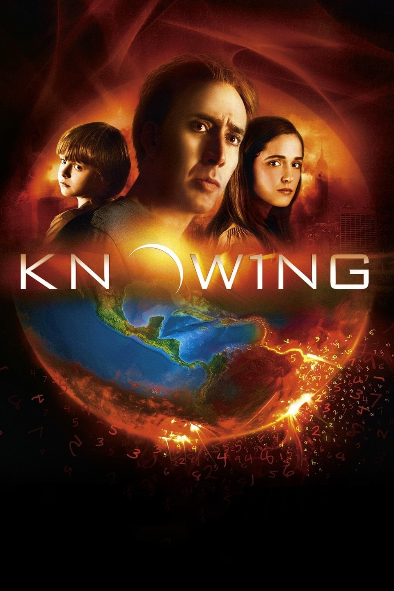

Мировая премьера: 20 марта 2009
Слоган: Что будет, когда закончатся числа?
Сюжет: Профессор Джон Кестлер расшифровывает загадочное послание, содержащее пугающе точные предсказания крупнейших катастроф в истории человечества. Стремясь защитить свою семью и предотвратить грядущие бедствия, он обращается за помощью к Дайане Уэйланд – дочери автора пророчеств, ныне уже покойной. Пытаясь разгадать истинный смысл послания и понять, какую роль в предсказаниях играет его собственная семья, Джон оказывается втянут в отчаянную гонку со временем. И вскоре ему предстоит столкнуться с последней и самой масштабной катастрофой.
Режиссёр: Алекс Пройас
В ролях: Николас Кейдж, Роуз Бирн, Чандлер Кентербери
| Николас Кейдж | Джон Кестлер |
| Роуз Бирн | Дайана Уэйланд |
| Чандлер Кентербери | Калеб Кестлер |
| Бен Мендельсон | Фил Бекман |
| Лара Робинсон | Эбби Уэйланд / Люсинда Эмбри |
| Надя Таунсенд | Грейс Кестлер |
| Даниэль Картер | Присцилла Тейлор в 1959 |
| Алетеа МакГрат | Присцилла Тейлор в 2009 |
| Лиам Хемсворт | Спенсер |
Бюджет: $ 50 млн.
Кассовые сборы в США: $ 80 млн.
Кассовые сборы в мире: $ 184 млн.
Продолжительность: 1 ч. 56 мин.
Рейтинг: 6.2